I can’t begin to count the times I’ve relied on a good wheelbarrow. When my wife, Mary, and I began building our homestead on Manitoulin Island in Lake Huron in 1986, I bought the biggest, baddest ’barrow I could find - a Sinclair Erie steel-pan 6-cubic-foot contractor model with an air-filled tire. We used it to haul limestone and mix mortar for more than 400 tons of stonework. We washed our clothes in it with a scrub board, and we even took baths in it before we installed running water. After hauling countless loads of soil, compost, manure and firewood, my good old Erie is still going strong. But since I got it, several more excellent wheelbarrow and cart designs have come on the market.
In the yard, vegetable patch or building site, a good wheelbarrow or garden cart can multiply your muscle power many times over. They also can help you move heavy loads more safely. A good ’barrow always has been an essential tool for self-reliance. But these days, advances in design and materials mean leading models deliver even more value. The trick is choosing the best design for your needs from a wide range of options.
To compare designs head to head, Mary and I gathered more than a dozen wheelbarrows and carts representing the best designs available. With the help of family and friends, we used them on our homestead over an eight-week period spanning the busy spring and summer gardening and building seasons. We discovered some wonderful general-purpose models and some that excel at specific tasks - in all, I recommend several with complete confidence.
If you work primarily in the garden, then a cart probably will serve you better than a wheelbarrow. Carts typically include a large box- or tub-shaped body, with big wheels for easy rolling. They usually have crossbar handles rather than the straight-back handles typical of wheelbarrows. You can’t mix a batch of mortar conveniently in most garden carts, but they can’t be beat for hauling a bulky load of raspberry prunings or sacks of topsoil.
If your outdoor work is a mix of building, gardening and livestock care, then your best bet probably is a heavy-duty construction wheelbarrow. These traditional designs include a curved pan, medium-size wheels and two straight wooden handles. They can manage almost any job, and they’re outstanding for a handful of specific jobs.
Got kids? A few small, high-quality carts and wheelbarrows are sized well for introducing youngsters to outdoor work.
The usefulness of a garden cart has more to do with generous volume and ease of rolling than brute carrying capacity. The carts most often chosen from our “used cart lot” for an afternoon of work are large and easy to push.
If we had to choose just one cart for gardening work, the Carts Vermont Model 26 ($209; see Image Gallery) would win hands down. Rated to carry 400 pounds, the massive 13.5-cubic-foot box (twice as large as a standard wheelbarrow pan) is made of half-inch exterior-grade plywood with a dip-stained finish. The front of the box slides up and out, making it easy to dump a load of soil, leaves or mulch. Perhaps the best feature of this cart is the 26-inch diameter bicycle-style wheels. With their large size and ball-bearing hubs, they roll so easily that you have to hold the cart back when going down even a slight incline. With the load balanced over the axle, you can haul hundreds of pounds with hardly any weight pushing down on the handle.
The Smart Cart XD515 from Lee Valley Tools ($279; see Image Gallery) is a medium-size hauler with a removable, 10-cubic-foot plastic tub that snaps into the tubular metal support frame. Like the other top garden carts, the Smart Cart is lightweight and easy to maneuver. Its 16-inch pneumatic tires are 4 inches wide and roll on sealed ball bearings. Although it’s rated to carry 600 pounds, I found the frame twisted and complained a bit when loaded that heavily. No matter, since you probably won’t be pushing that much around in one load anyway. Plus, the Smart Cart comes with a lifetime warranty.
A similar cart from Northern Tool & Equipment, the Agri-Fab Carry All Yard Cart ($199; see Image Gallery), has 11-cubic-foot capacity and flat-free tires.
When I first saw the rechargeable, battery-powered Neuton Garden Cart ($269; see Image Gallery), I was skeptical. It seemed designed mostly for store appeal, not the real world. Then Mary decided to haul fieldstones for use around her gardens from a spot a half-mile away. Using the Neuton, she hauled more than a dozen 150-pound loads. She also often used it for hauling topsoil, manure and mulch. The Neuton made her short list of best carts, and it impressed me, although it would be nice if this cart had a bit more power and speed.
The unit has two forward speeds and reverse. We had some trouble with the electric control system, but the company, DR Power Equipment, promptly shipped a new control module. The swap took about 10 minutes - problem solved. The battery charger plugs into a standard outlet, and the Neuton runs for about five hours on a full charge. Although a moderately muscular person could certainly outwork the Neuton with an ordinary push-type wheelbarrow, its electric power makes it especially suitable for anyone with limited physical strength.
Toward the lighter end of the spectrum is the Yard & Utility Cart from All Seasons Homestead Helpers ($60; see Image Gallery). At first glance it looks like an oversized rollaway suitcase with an open top, but it’s surprisingly useful. It weighs just 2 0 pounds, but its steel frame and tough nylon liner can haul ten times that. Young people can handle it easily - two 12-inch pneumatic tires make it extremely maneuverable. We’ve used it to haul firewood and found it a big help in yard cleanup - you can tip it onto its back and rake it full of leaves, or just trundle it along and toss in debris. It folds to store in minimal space.
The lightest of the bunch, the Allsop WheelEasy LE ($60; see Image Gallery), is a folding cart well suited for small gardens, light loads and tiny storage spaces. It has a V-shaped frame and a single wheel - two steel handles connect to a swiveling plastic yoke that supports the axle. A woven nylon basin spans the space between handles and supports the load. Simply lock the handles in the outward position to use the WheelEasy, or pull a couple of spring pins and the handles fold in for compact storage. You’re not going to haul massive loads with the WheelEasy, but that’s not what it’s made for. Besides light weight and ease of storage, its best feature is that it lies flat on the ground, so you can load it without lifting. Just roll, sweep or shovel material onto the nylon fabric, grab the handles and roll away.
The Woodchuck Firewood Hauler WC20 ($99; see Image Gallery) is another Carts Vermont product, designed specifically for moving stove wood that’s 12 to 20 inches long. It’s rated to carry 150 pounds, and the 20-inch diameter bicycle-style spoked wheels roll extremely easily, even up and down stairs. Solid rubber tires eliminate any chance of flats. The hot-dipped galvanized frame and heavily painted parts mean you could keep the Woodchuck outdoors year-round, without fear of rust.
Contractor’s wheelbarrows have either one or two wheels. Single-wheel designs turn more sharply and sneak into tight spaces more easily than two-wheeled ’barrows, but they’re also less stable. It’s easy to tip over a fully loaded, single-wheel model if the load isn’t balanced just right. Dual-wheel designs are almost tip-proof.
The standout among construction wheelbarrows in our test was the dual-wheel Brentwood Industries PW8D ($191; see Image Gallery). It’s got a whopping 8-cubic-foot polyethylene pan with rigid, quarter-inch-thick walls. Beefy, one-piece ash handles are long enough to create lots of legroom for all-out walking, and the two 16-inch diameter, flat-proof foam tires are unbeatable (see “Flat-free Tires Won’t Let You Down”). There are excellent angled grease fittings on the wheel hubs, too.
Rubbermaid makes a handful of excellent carts and wheelbarrows, all using a material called “structural foam” for pans and other parts. The name may sound flimsy, but the material definitely isn’t. We’ve used Rubbermaid’s single-wheel Contractor Wheelbarrow ($207) for eight years, and the pan is particularly impressive. It’s a rigid, thick-wall synthetic that resists cracking even when it’s full of water that freezes solid. The material is so strong that it’s even used to support the axle on the front ends of the handle. My only complaint about the Rubbermaid Contractor Wheelbarrow is that the support legs extend straight down, and it’s easy to kick them as you’re walking along at a good clip. The synthetic sleeve bearing on the wheel squeaked, so I installed a grease fitting on the wheel hub to keep the bearing lubed and quiet.
The Joe Built HD-500 ($3,380; see Image Gallery) motorized wheelbarrow is an award-winning machine for people who need to move lots of heavy stuff. And I mean lots: It has a six-horsepower, two-stroke engine, a 1,200-pound hauling capacity and an 11-cubic-foot polyethylene tub that you just can’t damage. The semiautomatic transmission has three forward speeds and reverse. Top gear is a fast walk, and first gear hauls half a ton up a 30-degree incline at a crawl. We found the Joe Built’s engine noise a little loud, but that’s to be expected in a machine designed for industrial use. The unit really shines on the homestead for hauling heavy materials, especially in tight quarters or over medium distances. The Joe Built is ideal for moving firewood out of the forest in low-impact harvesting operations, and for carting heavy loads of stone, soil and cement products for building and repairs.
The Prestar three-wheel “push barrow” ($90; see Image Gallery) is a unique, medium-size model that offers a real advantage for not-so-strong people who need to move heavy loads. It’s also sized just right for young people. Its all-steel design includes a 6-cubic-foot pan, a 16-inch front wheel and two retractable, 11-inch air-filled wheels at the back, one at the bottom of each support leg. The Prestar essentially has two handles: a pair like those on a typical wheelbarrow, and a horizontal push bar about a foot above the regular handles. You can pick up the pair of handles, which raises the rear wheels off the ground, and use the Prestar as you would any other single-wheel ’barrow, or lean into the horizontal push bar and roll the unit forward on all three wheels. To set the unit down on an incline, you can retract the rear wheels with a push of your foot against the rear axle. The axle rises up into a slot, and the support legs rest on the ground, preventing the Prestar from rolling away. The black, factory-applied coating is thick and tough - just what you’d expect on this industrial-strength wheelbarrow.
Every year tools are getting better, and that goes for carts and wheelbarrows, too. Equip yourself with a good model and you’ll be amazed how much you can get done in a day, all while getting a healthy dose of exercise.
When air-filled wheelbarrow tires first appeared on the scene more than 50 years ago, they were a huge advance over steel-rimmed wheelbarrow wheels, because they rolled so much more easily. The semisoft, air-filled tires offer a bit of shock absorption as they go over bumps, making rolling action considerably easier. But pneumatic tires also go flat. To eliminate this problem, leading manufacturers now offer wheelbarrow tires made entirely of firm, closed-cell polyurethane foam. They never go flat, yet they have the same physical consistency as fully inflated pneumatic tires. Several of the carts reviewed in this article are available with flat-free tires, either as standard or optional equipment. These tires also are available in a variety of sizes as replacements for older wheelbarrows from hardware and farm supply companies such as Gempler’s, Lee Valley Tools and Northern Tool & Equipment.
|
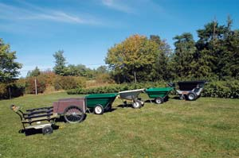 STEVE MAXWELL From left: the Neuton, the Carts VT 26, the Carry All, the Brentwood, the Smart Cart and the Joe Built. |
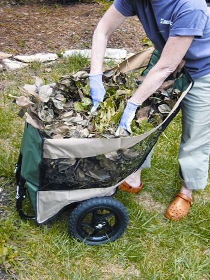 CHARLES HIGGINSON All Seasons Homestead Helpers Yard & Utility Cart |
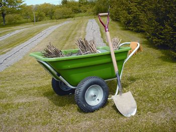 STEVE MAXWELL Lee Valley Smart Cart |
|
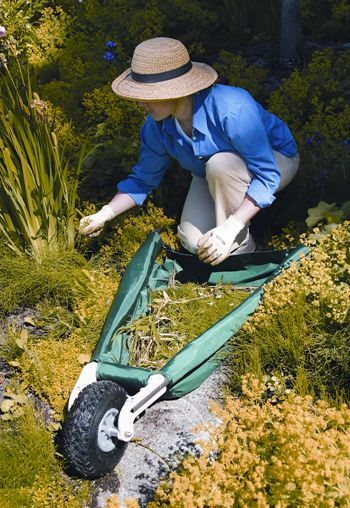 ALLSOP HOME & GARDEN Allsop WheelEasy LE |
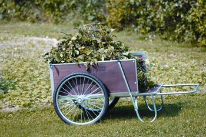 STEVE MAXWELL Carts Vermont Model 26 |
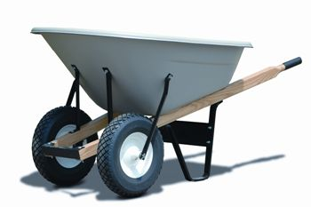 STEVE MAXWELL Brentwood Industries PW8D |
|
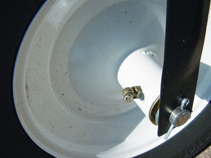 STEVE MAXWELL Brentwood grease fitting |
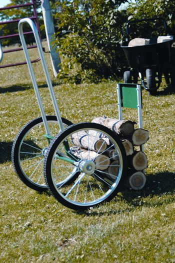 STEVE MAXWELL Carts Vermont Woodchuck Firewood Hauler |
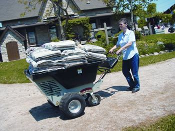 STEVE MAXWELL Joe-Built HD-500 |
|
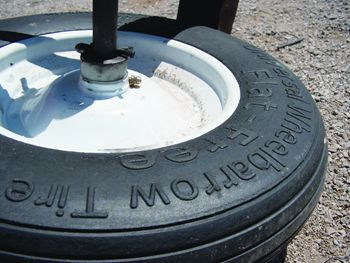 ROBERT MAXWELL Flat-free tires are made of firm, closed-cell polyurethane foam. They’re available as options on many carts and are sold as replacements for older wheelbarrows. |
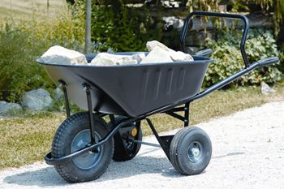 ROBERT MAXWELL Prestar Push Barrow |
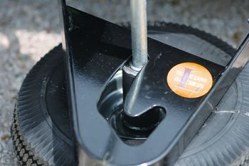 ROBERT MAXWELL The Prestar’s retractable rear axle |